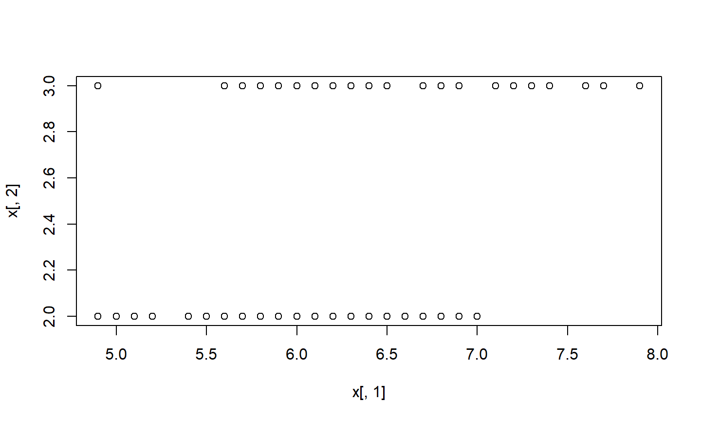
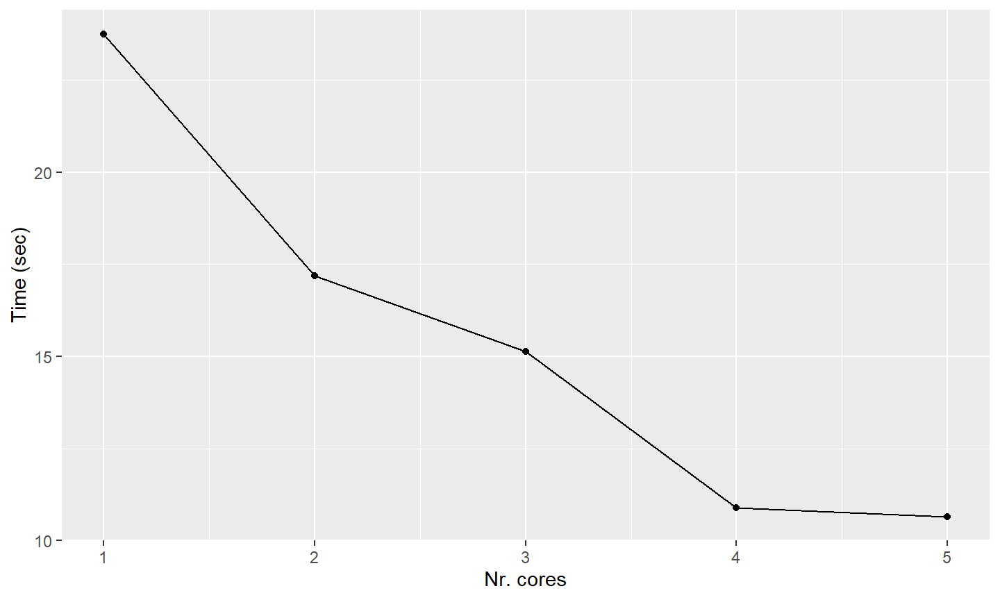

We will use the iris database:
x <- iris[which(iris[,5] != "setosa"), c(1,5)] summary(x)
## Sepal.Length Species ## Min. :4.900 setosa : 0 ## 1st Qu.:5.800 versicolor:50 ## Median :6.300 virginica :50 ## Mean :6.262 ## 3rd Qu.:6.700 ## Max. :7.900
Feb., 2021
We will use the iris database:
x <- iris[which(iris[,5] != "setosa"), c(1,5)] summary(x)
## Sepal.Length Species ## Min. :4.900 setosa : 0 ## 1st Qu.:5.800 versicolor:50 ## Median :6.300 virginica :50 ## Mean :6.262 ## 3rd Qu.:6.700 ## Max. :7.900
plot(x[,1],x[,2]) #plot of Species vs. sepal lengths

we will use the foreach function from the doParallel package to fit the data to a generalized linear model.
library(doParallel)
Let’s take a look at the performance of a logistic regression model in serial mode (1 core):
trials <- 10000
stime <- system.time({
r <- foreach(icount(trials), .combine=cbind) %do% {
ind <- sample(100,100, replace=TRUE)
result1 <- glm(x[ind,2]~x[ind,1], family=binomial(logit))
coefficients(result1)
}
})[3]
stime
## elapsed ## 23.81
Now, look at the performance using 2 cores:
cl <- makeCluster(2)
registerDoParallel(cl)
ptime <- system.time({
r <- foreach(icount(trials), .combine=cbind) %dopar% {
ind <- sample(100,100, replace=TRUE)
result1 <- glm(x[ind,2]~x[ind,1], family=binomial(logit))
coefficients(result1)
}
})[3]
ptime
## elapsed ## 15.41
stopCluster(cl)
a graphical view of the scaling behavior can be seen in the following plot:

stime <- system.time(
foreach(i=1:1e4) %do% sqrt(i) )
stime
## user system elapsed ## 1.87 0.00 1.90
cl <- makeCluster(2)
registerDoParallel(cl)
ptime <- system.time(
foreach(i=1:1e4) %dopar% sqrt(i) )
ptime
## user system elapsed ## 2.72 0.29 3.21
stopCluster(cl)
Only if the computational load (number of numerical operations) exceeds the overhead of using the parallel routines.
Another message from these examples is that one always needs to check the performance of the code (Time) vs. the number of requested cores, to use an “optimal” number.
These data can be useful upon applying for medium/large SNIC projects because the reviewers would know if the requested hours are justified.